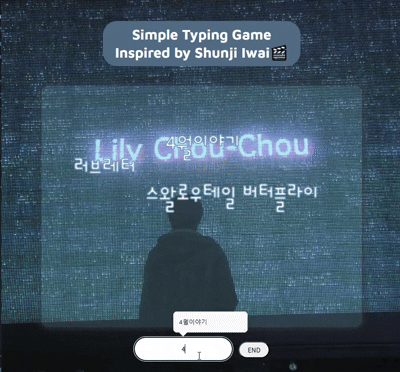

Front-end Portfolio
인터페이스의 디테일을 채우는
프론트엔드 작업로그
Vanilla JavaScript를 중심으로 UI 동작과 화면 흐름을 구현한 프로젝트들을 정리했습니다.
About Me
궁금한 건 끝까지 파고드는 개발자입니다
머릿속 아이디어를 손끝으로 구현해 보는 게 즐겁습니다.
막히는 부분이 생겨도 화면이 돌아갈 때까지 끝내 붙들고 늘어집니다.
현재 학습 흐름
JavaScript → DOM 프로젝트 → React 확장Focus On:
- 인터랙션 : 살아있는 화면 움직임
- 순수 성능 : Vanilla JS 구현
- 크로스 플랫폼 : 웹과 앱을 잇는 레이아웃
- 화면 설계 : 논리적이고 깔끔한 구조
Project 01
Will you be my Valentine 💌
네 / 아니오 버튼의 서로 다른 반응을 중심으로 구성한 인터랙티브 카드 프로젝트입니다. 버튼 클릭 이벤트, 동적 위치 변경, 화면 상태 전환을 구현하며 JavaScript 기반 UI 제어 방식을 익혔습니다.

Project 02
Beep Calculator 🔊
버튼을 누를 때마다 사운드가 재생되는 인터랙티브 계산기입니다.
계산 기능을 넘어 사용자가 누르는 재미를 느끼는 UI를 목표로 만들었습니다.


Project 03
Typing Rain Game 🎬
떨어지는 단어를 입력해 제거하는 타이핑 게임입니다. 게임 루프, 상태 관리, 화면 업데이트 흐름을 직접 다루며 DOM 제어 감각을 훈련한 프로젝트입니다.
Contact
아이디어를 코드로 구현하는 개발자
다양한 아이디어로, 실제 화면을 구현하며 성장하고
웹 기술로 모바일 환경까지 아우르는 유연한 화면을 구현하는 개발자가 되고 싶습니다.